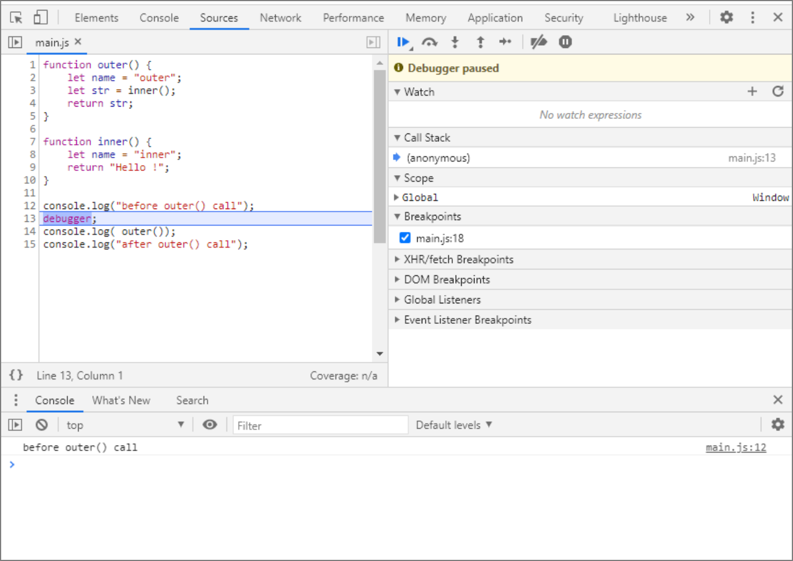
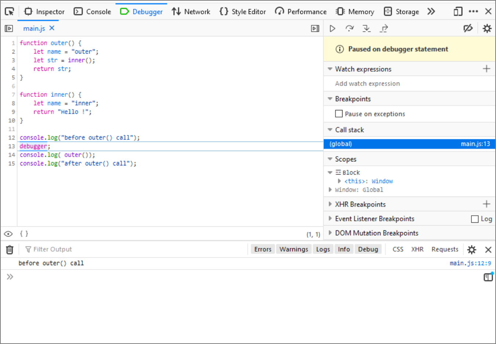

Create two files in any code editor (we described how to configure the local environment in the "Development tools" chapter): index.html and main.js. In the index.html file, place the code for this very simple HTML web page:
< !DOCTYPE html>
< html>
< head>
< script src="main.js">
< /head>
< body>
< p>Test Site< /p>
< /body>
< /html>
Save the file to your local drive, preferably in a newly-created, empty directory. In the same directory, save the main.js file (which, as you may have noticed, is referenced in the index.html code), placing the following code inside it:
function outer() {
let name = "outer";
let str = inner();
return str;
}
function inner() {
let name = "inner";
return "Hello !";
}
console.log("before outer() call");
console.log(outer());
console.log("after outer() call");
In the browser you are using, open a new tab and load the index.html file into it.
Depending on your browser and system, you can either use the program menu or the appropriate
keyboard shortcut (in Linux and Windows: Ctrl + O, in macOS: ⌘ + O).If everything has been done correctly,
you will see this text in the tab: "Test Site".
Now we need to start the Developer Tools. We discussed how to run them on different systems and browsers
in the chapter titled "Development tools". For example, in Chrome and Firefox browsers, on Windows and Linux,
we use the key combination: Ctrl + Shift + I. In the remainder of this exercise, we will limit ourselves to
discussing how the debugger works using the Chrome and Firefox browsers as examples.
Select Console from the Developer Tools tabs. Reload the page (key combination Ctrl + R or ⌘ + R).
The following messages should appear on the console:
before outer() call
Hello !
after outer() call
This is the result of the console.log methods from the program written in the main.js file. If everything has worked so far, we are ready to start playing with debugging.
Let's try the debugger statement in practice. Place it in the main.js code before calling the function outer. So the last lines of the main.js file should now look like this:
Do not forget to save the modified file. Go back to your browser and reload the page. What has happened? First of all, in the Developer Tools,
the selected tab has changed: in Chrome, it will be to Sources, in Firefox to Debugger.
The debugger statement causes the program
to stop its execution on the line where we put it and wait for our decision. In the tab, among other information,
you should see the code of our program, with the line on which the execution has stopped clearly highlighted.
In Sources / Debugger view, we also have the option to use the console (we don't have to switch to the Console tab).
Try pressing the Esc key several times. Notice that the console will appear and disappear at the bottom of the tab.
For further work, leave it visible. Since only one console.log is executed before the program stops, you should only
see the following in the console:
OUTPUT
before outer() call
Chrome:  Firefox: 
To the right of the tab, locate the Resume button (the triangle icon rotated to the right – play). If you hover your mouse over this button, a tooltip should appear so that you can make sure it's the right button. Press this button, or use the keyboard shortcut F8. As a result, the program will move on, and without stopping any more, it will execute to the end by itself. The console should now show the complete information generated by the program:
OUTPUT
before outer() call
Hello !
after outer() call
Using Resume does not necessarily cause the program to execute to completion. We can indicate where it should stop again. Reload the page again. Notice that the debugger displays line numbers to the left of the code. Click on the number 15, indicating the last line in our code. This is how we set the breakpoint (the line will be highlighted). Click on the line number again if you want to remove the breakpoint (do not delete it yet). If we now click on the Resume button (or use F8) the program will move on and will stop at the breakpoint. As a result, the console will display the following text:
OUTPUT